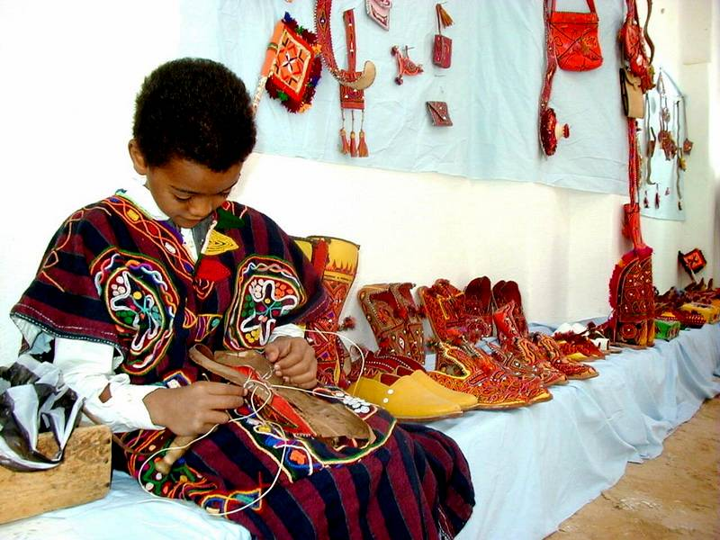

Geography

Located in north-western Libya near the borders with Algeria and Tunisia. It has a hot desert climate with long, extremely hot summers as average high temperature is around 45 °C in July.
Culture
The indigenous language of Ghadames is Ghadamès, a Berber language. It also has traditional dresses, accessories and folk music, in addition to other handicrafts industries made from leather and Palm derivatives are used for wearing and decoration.
Architecture

The old twon of Ghadames distinguishes by its architecture which is described as “Defensive Architecture”, which formed as a big compact fortress to integrate with the harsh climate.